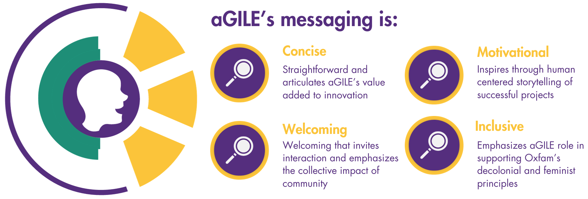

As lead for aGILE's strategic communications plan, projects I spearheaded before the website, including the first
"Innovation Round Up" newsletter and an "Innovation" page on Oxfam's global intranet, served as opportunities to identify
and organize research about the lab.
Stage 1: A clear vision
A successful website has a clear vision and call to action. I conducted an audience mapping to identify aGILE’s audiences and help clarify the specific audience for the website.
- Define the current and desired audiences of aGILE
- Identify interconnecting relationships within our stakeholder ecosystem
- Mapping the value exchange between aGILE and key groups
We create an audience map to define relationships which makes us better placed
to understand our stakeholders' influence and value for creating tailored communications
Stage 2: Scope of Ideation

With research and identified audiences, during the annual retreat in November, I led an ideation session on the website with my team and Oxfam's Public Engagement (PE) team. Our discussion -
- What are the pros and cons of single vs multipage?
- Who should be the website's target audience?
What are aGILE's marketable differentiators?
As aGILE sits within its parent Oxfam, I worked closely with PE to develop a brand story to express aGILE vision, mission, approach, and priority focus areas—as a narrative while meeting Oxfam guidelines.

Stage 3: Prototyping
With the scope well-defined, it was time to map content to specific sections of the landing page, strategically organizing information to ensure a cohesive and engaging user experience.
Wireframe: Working with the Oxfam Web Administration team, I created a series of wireframes that experimented with different flows of information.
Visual Identity: Defining a visual representation of aGILE that aligns with its values of innovation for change and scaling for impact.

Stage 4: Testing
and Iterating
With the first iteration created, I sought feedback and suggestions from the stakeholders involved: the aGILE team and advisory group, and the Innovation at Oxfam network.
Next Steps: Refine design based on testing, and make changes to improve usability and navigation. Create a plan for future website audits.
Currently, working on an “Innovation at Oxfam” section on the Oxfam Public and Policy website.
Reflections
It is deeply exciting to learn from and be involved in the early stages of a new team as it articulates its values and experiments with new opportunities. I enjoyed having this opportunity to contribute to the decision-making process and the team's overall direction. I was also able to draw upon my computer science skills and web administration intern experiences at Smith College’s Conway Innovation & Entrepreneurship Center to create aGILE’s page.
Given that the team is spread across different regions around the world, it was challenging at times, to maintain consistent communication. But by emphaszing the communications we currently have of weekly check-ins and workspace chat, we met our website goals as we work to further improve coordination and collaboration.